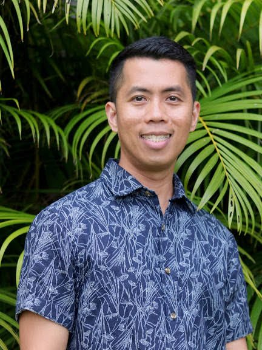
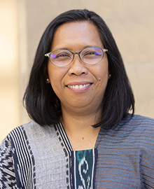
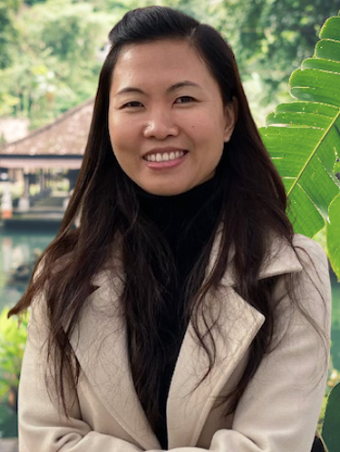

The Living Archive of Southeast Asian Scholastic Excellence
Since its founding in 1984, the Council of Teachers of Southeast Asian Languages has stood as the definitive nexus for pedagogical innovation and cultural preservation across the global academic landscape.

Who We Are
COTSEAL is a professional interest group whose primary purpose is to promote the discipline of language teaching on all levels: teaching, materials development, and research. We serve as a vital bridge between scholars, educators, and students worldwide, fostering deep appreciation for the linguistic diversity of Southeast Asia.
Membership is open to any individual or institution with a professional interest in the teaching of Southeast Asian languages. COTSEAL is affiliated with the Association for Asian Studies (AAS) and the Southeast Asian Council (SEAC), which oversees the Southeast Asian Studies Summer Institute (SEASSI).
A Legacy of Language
Founded at the University of Michigan on August 12, 1984, COTSEAL grew from 24 founding members into a multi-national consortium recognized by the major linguistic and Asian studies societies. The organization's first president, Richard McGinn of Ohio University, guided its constitution, affiliation with AAS, and establishment of the twice-yearly meeting schedule that continues today.


Our Purpose
"COTSEAL is a professional interest group whose primary purpose is to promote the discipline of language teaching on all levels: teaching, materials development, and research."
— COTSEAL Constitution
Pedagogy
Developing innovative curricula, teacher training, and standards that reflect contemporary Southeast Asian linguistic needs.
Collaboration
Facilitating cross-institutional research and exchange through AAS panels, SEASSI workshops, and the COTSEAL annual conference.
Publications
Publishing the peer-reviewed Journal of Southeast Asian Language Teaching (JSEALT) and archiving scholarly materials for educators worldwide.
Current Officers
COTSEAL officers are elected by the membership to serve three-year terms, providing leadership and continuity for the organization's mission.

Dr. Jayson Parba
President
University of Hawaiʻi at Mānoa

Dr. Rahmi Aoyama
Vice President
Northern Illinois University

Hoan Nguyen
Secretary
UC San Diego
Past Presidents
New presidents take office after the AAS meeting in the year in which they are elected. Presidents are elected to serve a three-year term.
Join the Academic Community
Become a part of the global effort to strengthen Southeast Asian language education and scholarship.